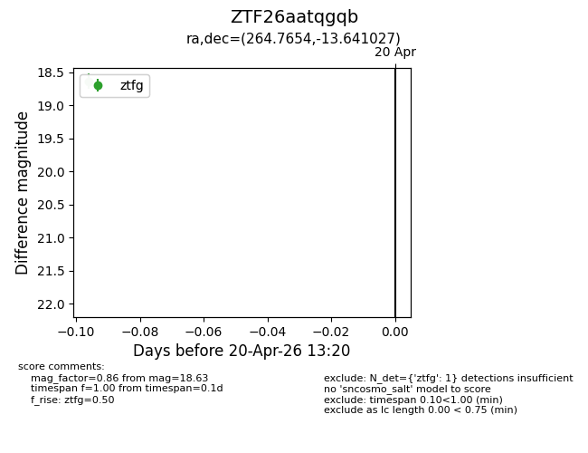
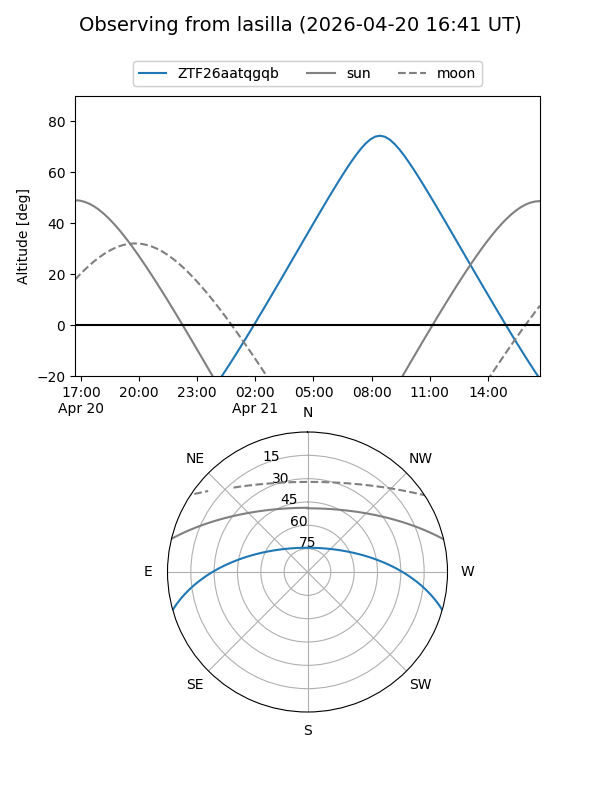
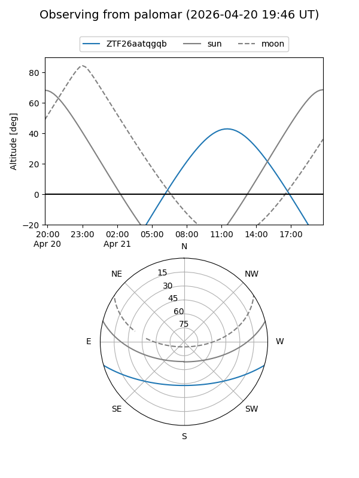

ZTF26aatqgqb
Target ZTF26aatqgqb at 2026-04-20 13:32
Aliases and brokers:
FINK: link
Lasair: link
ALeRCE: link
alt names
ZTF26aatqgqb (ztf,fink_ztf)
Coordinates:
equatorial (ra, dec) = 264.7654,-13.64103
equatorial (HMS+DMS) = 17:39:03.69,-13:38:27.70
galactic (l, b) = (12.3152,+9.26936)
Flags:
Photometry:
last ztfg=18.63
1 ztfg detections
Lightcurve

Visibility


Additional plots